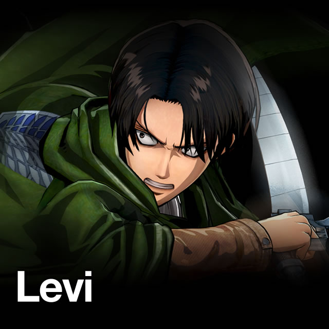
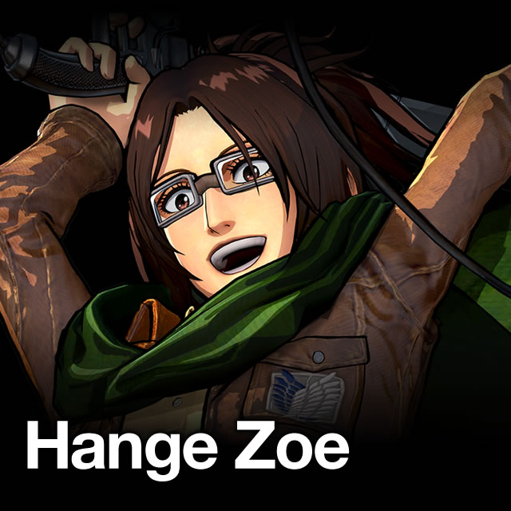
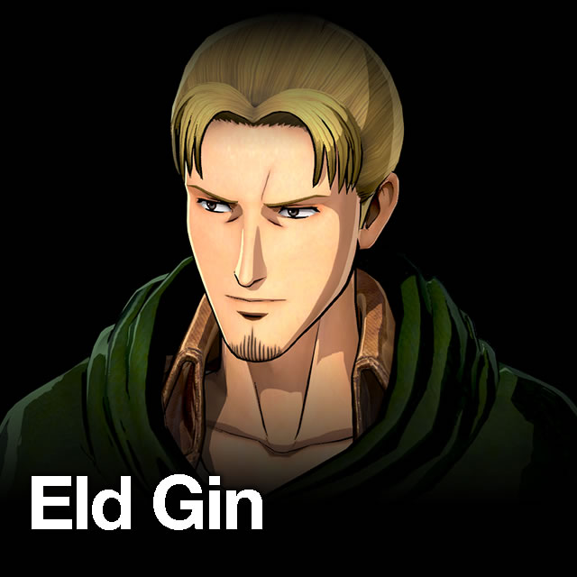
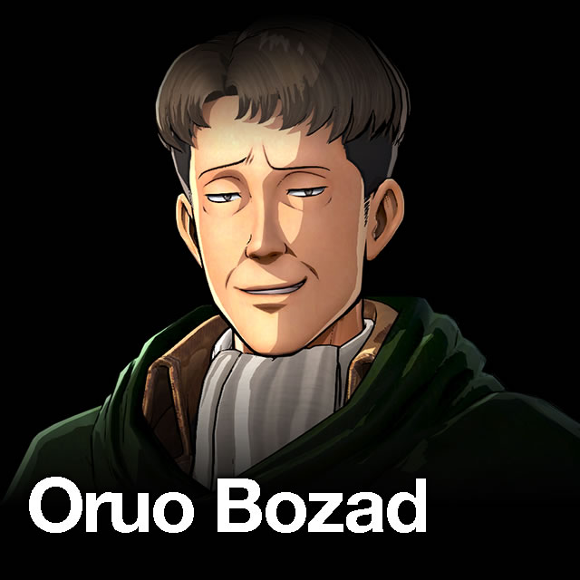
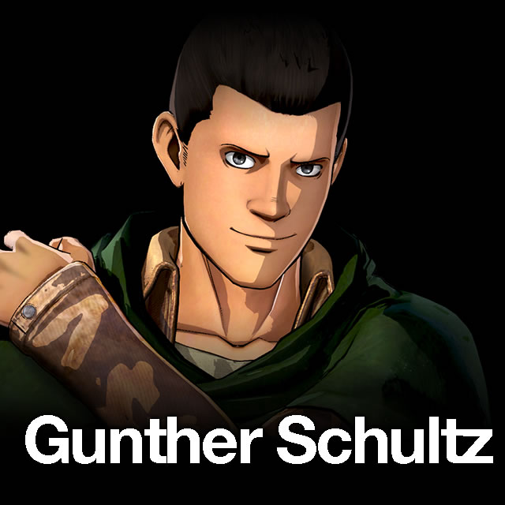
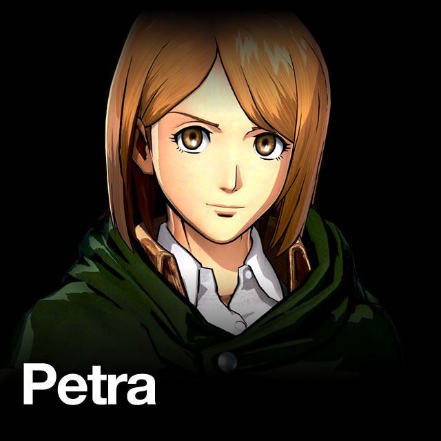
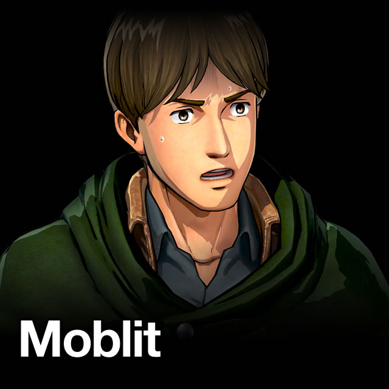
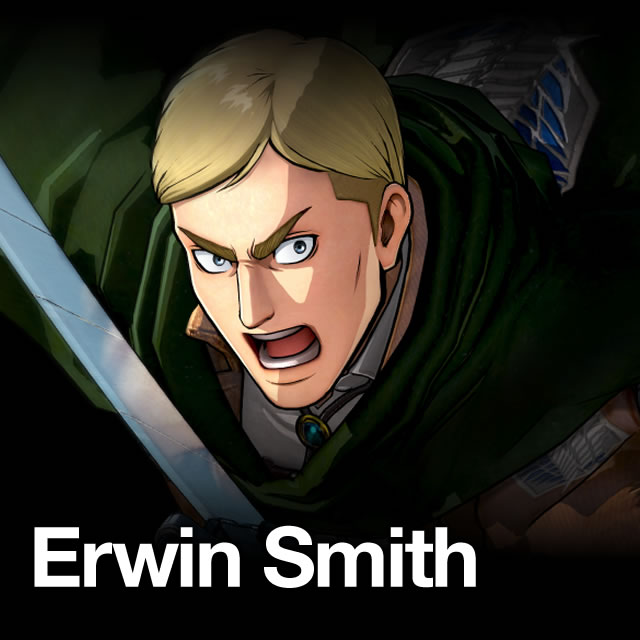
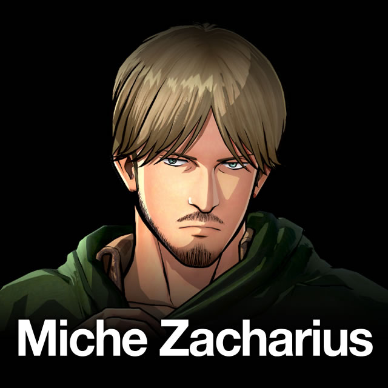

- Кадетский корпус
 Разведкорпус
Разведкорпус- Военная полиция
- Гарнизон стен
Леви
Леви - сильнейший боец человечества. Капитан Леви - «Чистоплюй». Он не любит пачкаться, а свои, запачканные кровью, клинки, как известно, вытирает, ещё находясь на поле боя. Леви очень обособлен и необщителен. Он редко проявляет эмоции, производя на окружающих не самое лучшее впечатление.
Ханджи Зое
Ханджи - открытая, доброжелательная, обладает чувством юмора; некоторые считают её милой. Она фанатично интересуется природой титанов, о которых может рассказывать бесконечно. Ради изучения природы титанов проводила эксперименты над ними, очень страдая если нужно было причинить подопытным боль.
Элд Гин
Элд - вице-капитан Особого отряда, он внушает доверие и верность своим товарищам.
Оруа Бозад
Оруа - «показушник», который во всём подражает Леви, но не смотря на это, он умелый боец. Член Особого отряда Леви.
Гюнтер Шольц
Гюнтер - крепкий и надёжный парень, заслуживший честь стать членом Особого отряда Леви.
Петра
Петра - милая девушка, которая проявила себя и стала членом Особого отряда Леви.
Моблит
Моблит - «правая рука» Ханджи, он следит, чтобы та чего не натворили или ненароком убила себя.
Эрвин Смит
Эрвин - Главнокомандующий Разведкорпуса. Он рассудительный, умный и уважаемый человек. Несмотря на заботу о подчинённых, в случае необходимости без колебаний готов пожертвовать ими ради остального человечества. Он отчетливо знает свою цель и ни за что от нее не отступится.
Мики Захариус
Мики - один из капитанов в Разведкорпусе. Признан вторым после Леви бойцом среди людей. У него есть странная привычка обнюхивать людей.

Леви - сильнейший боец человечества. Капитан Леви - «Чистоплюй». Он не любит пачкаться, а свои, запачканные кровью, клинки, как известно, вытирает, ещё находясь на поле боя. Леви очень обособлен и необщителен. Он редко проявляет эмоции, производя на окружающих не самое лучшее впечатление.

Ханджи - открытая, доброжелательная, обладает чувством юмора; некоторые считают её милой. Она фанатично интересуется природой титанов, о которых может рассказывать бесконечно. Ради изучения природы титанов проводила эксперименты над ними, очень страдая если нужно было причинить подопытным боль.

Элд - вице-капитан Особого отряда, он внушает доверие и верность своим товарищам.

Оруа - «показушник», который во всём подражает Леви, но не смотря на это, он умелый боец. Член Особого отряда Леви.

Гюнтер - крепкий и надёжный парень, заслуживший честь стать членом Особого отряда Леви.

Петра - милая девушка, которая проявила себя и стала членом Особого отряда Леви.

Моблит - «правая рука» Ханджи, он следит, чтобы та чего не натворили или ненароком убила себя.

Эрвин - Главнокомандующий Разведкорпуса. Он рассудительный, умный и уважаемый человек. Несмотря на заботу о подчинённых, в случае необходимости без колебаний готов пожертвовать ими ради остального человечества. Он отчетливо знает свою цель и ни за что от нее не отступится.
